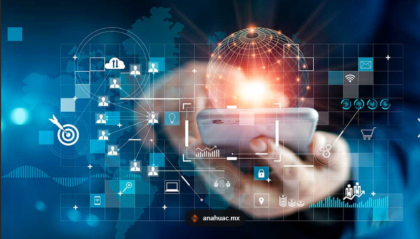
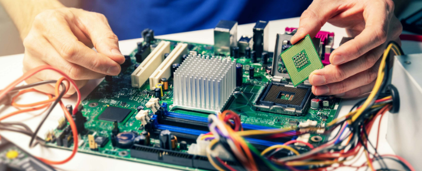

Em termos gerais, tecnologia é a aplicação do conhecimento científico aos objetivos práticos da vida humana ou à mudança e
do ambiente. Técnicas, equipamentos, robôs e demais coisas que ajudam na rotina das pessoas podem ser considerados objetos
tecnológicos.
A tecnologia é um conjunto de conhecimentos, técnicas e ferramentas que os seres humanos desenvolveram ao longo da história
para resolver problemas e atender às necessidades humanas. Ela envolve a aplicação prática do conhecimento científico e pode
ser vista como um produto da ciência e da engenharia. A palavra "tecnologia" tem origem no grego "tekne", que significa técnica
ou arte, e "logia", que significa estudo. A tecnologia impacta diversas áreas, como saúde, educação, trabalho e lazer, e é fundamental
para a evolução da sociedade.
A tecnologia tem transformado profundamente a sociedade, trazendo benefícios significativos, mas também desafios e preocupações éticas.
Comunicação e Conexão: A tecnologia digital facilitou a comunicação instantânea, permitindo que pessoas de diferentes partes do mundo se conectem facilmente. Redes sociais e aplicativos de mensagens têm aproximado amigos e familiares, independentemente da distância.
🟢 1
Acesso à Informação: A internet democratizou o acesso ao conhecimento, permitindo que informações antes inacessíveis estejam disponíveis a um clique. Isso tem impulsionado a educação e a capacitação profissional.
🟢 2
Eficiência e Produtividade: A automação e a inteligência artificial têm revolucionado o mercado de trabalho, aumentando a eficiência em diversas indústrias. Tarefas repetitivas são agora realizadas por máquinas, permitindo que os trabalhadores se concentrem em atividades mais criativas e estratégicas.
🟢 3
Inovação em Saúde: Avanços tecnológicos têm melhorado a qualidade dos cuidados de saúde, com inovações em diagnósticos e tratamentos, além de facilitar o acesso a serviços médicos.
A inteligência artificial (IA) é a capacidade de sistemas computacionais de simular a inteligência humana para realizar tarefas, aprender com dados e resolver problemas de forma autônomo.
Atualmente, a tecnologia se divide em quatro categorias principais:
🟢 IA Limitada (ANI): Especializada em tarefas específicas, como recomendações de streaming ou assistentes virtuais. É a forma mais comum hoje.
🟢 IA Generativa: Focada na criação de novos conteúdos, como textos, imagens e áudios (ex: ChatGPT).
🟢 IA Geral (AGI): Um estágio futuro onde as máquinas teriam habilidades cognitivas equivalentes às humanas. Estima-se que possa ser alcançada entre 2027 e 2028.
🟢 Superinteligência (ASI): Nível hipotético onde a IA superaria a inteligência humana em todos os aspectos.
A montagem e manutenção de PCs envolve o conhecimento técnico de hardware (processador, placa-mãe, memória, fontes, SSDs/HDs) e software (BIOS, sistemas operacionais, drivers). Essencial para técnicos, abrange desde a montagem de gabinetes até manutenção preventiva (limpeza com álcool isopropílico) e corretiva (diagnóstico e troca de peças), garantindo desempenho e funcionamento.

🟢Hardware (Parte Física): Compreende o manuseio e instalação de componentes como a placa-mãe, processador (o "cérebro" do PC), memória RAM, HD/SSD e fonte de alimentação.
🟢Software (Parte Lógica): Inclui a instalação e configuração de sistemas operacionais (como o Windows), drivers e aplicativos essenciais.
🟢Manutenção Preventiva: Limpeza interna de componentes, troca de pasta térmica e organização de cabos para evitar superaquecimento.
🟢Manutenção Corretiva: Diagnóstico de falhas (como capacitores estourados ou telas azuis) e substituição de peças defeituosas.
Análise e Desenvolvimento de Sistemas (ADS) é um curso tecnólogo de nível superior, geralmente com 2 a 3 anos de duração, focado na criação, implementação e manutenção de softwares. O profissional analisa necessidades de empresas e as transforma em soluções tecnológicas, envolvendo modelagem de dados, programação, testes e banco de dados.
🟢Levantamento de Requisitos: Entender o que o sistema precisa fazer consultando os usuários.
🟢Projeto e Modelagem: Desenhar a estrutura do sistema, bancos de dados e interfaces.
🟢Implementação e Testes: Codificar o sistema ou supervisionar programadores e garantir que tudo funcione sem erros.
🟢Manutenção: Atualizar sistemas existentes para corrigir falhas ou adicionar novas funcionalidades.
A lógica de programação é a base do desenvolvimento de software, definindo o pensamento estruturado e a sequência ordenada de passos (algoritmos) para resolver problemas e automatizar tarefas no computador. Ela organiza o pensamento para criar instruções coerentes, independente da linguagem utilizada (como Python ou JavaScript).
🟢Algoritmos: Uma sequência finita de passos lógicos (como uma receita) para atingir um objetivo ou resolver um problema.
🟢Variáveis e Tipos de Dados: Espaços na memória para armazenar informações, que podem ser números, textos (strings) ou valores lógicos (booleanos).
🟢Estruturas Condicionais: Permitem que o programa tome decisões baseadas em condições (ex: se a idade for maior que 18, então permita o acesso).
🟢Estruturas de Repetição (Loops): Comandos que repetem um bloco de código enquanto uma condição for verdadeira, evitando a escrita manual de tarefas repetitivas.
O desenvolvimento web abrange a criação e manutenção de sites e aplicações para a internet, dividindo-se principalmente entre front-end (interface visual) e back-end (servidor/lógica). Utiliza tecnologias essenciais como HTML, CSS e JavaScript, sendo uma das áreas mais demandadas e com altos salários no mercado de tecnologia.
🟢Front-end: Focado na parte visual e na interação com o usuário. As tecnologias base são HTML (estrutura), CSS (estilo) e JavaScript (interatividade).
🟢Back-end: Cuida da lógica "por trás das cenas", como processamento de dados e comunicação com o banco de dados. Linguagens comuns incluem Python, PHP e Java.
🟢Full-stack: O profissional que domina tanto o front-end quanto o back-end, sendo capaz de desenvolver uma aplicação completa sozinho.